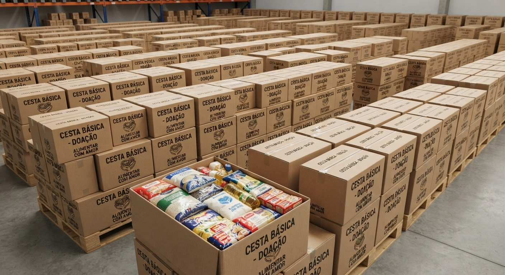
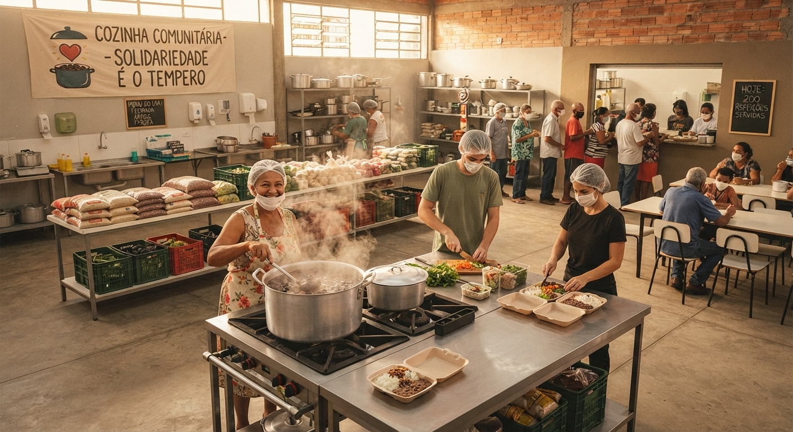
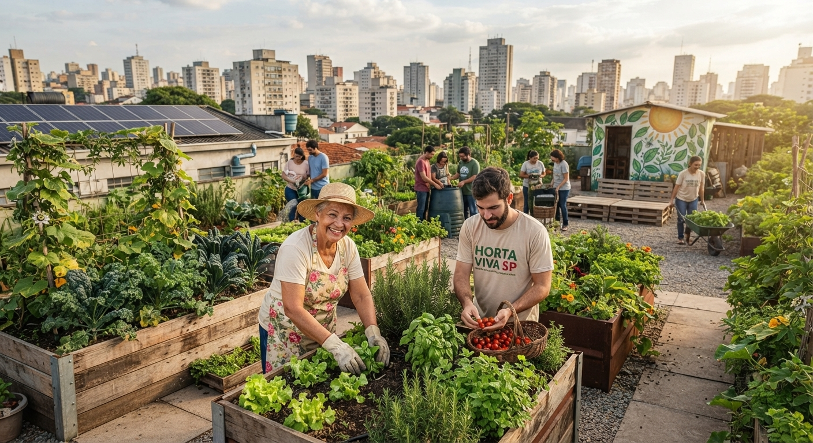
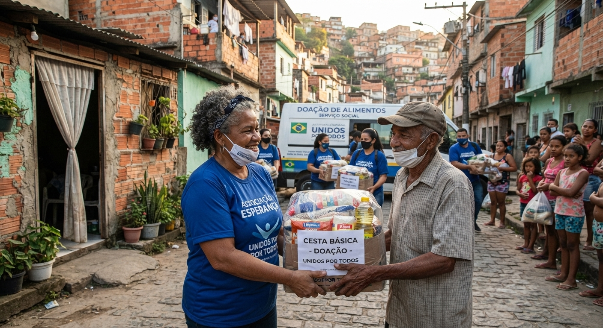
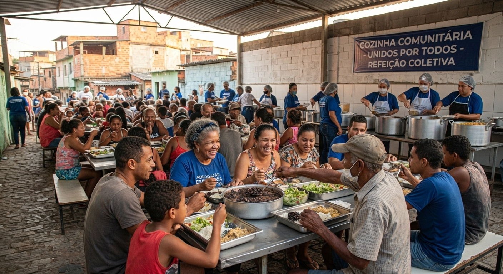
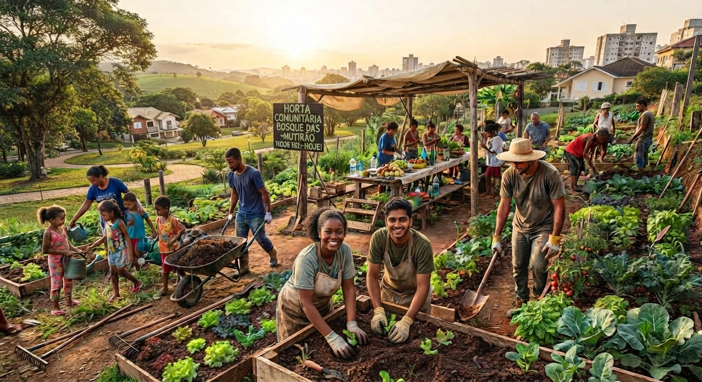

Cestas básicas
Distribuímos cestas básicas para famílias em situação de vulnerabilidade social, garantindo que tenham acesso a alimentos essenciais.
Cada projeto da Alimentar com Amor nasceu para combater a fome de um jeito diferente. Conheça o que fazemos e veja como você pode ajudar.

Distribuímos cestas básicas para famílias em situação de vulnerabilidade social, garantindo que tenham acesso a alimentos essenciais.

Oferecemos refeições quentes e nutritivas em nossa cozinha comunitária, proporcionando um espaço de acolhimento e solidariedade para aqueles que mais precisam.

Cultivamos hortas urbanas em áreas públicas, promovendo a alimentação saudável e o acesso a produtos frescos e nutritivos para a comunidade.
Qualquer pessoa pode ajudar, não precisa ter experiência. Basta ter vontade e um pouco de tempo livre.
Você pode ajudar de três formas. Os dados abaixo são fictícios, feitos só para este trabalho.
Aceitamos alimentos não perecíveis, como arroz, feijão, macarrão, óleo e leite em pó.
Ponto de entrega: Rua da Esperança, 100, de segunda a sexta, das 9h às 17h.
Toda quantia ajuda a comprar alimentos para as cestas e para a cozinha.
Chave Pix (fictícia): doacoes@exemplo.org
Banco Exemplo, agência 0000, conta 00000-0
Doe algumas horas por semana para cozinhar, separar doações ou cuidar da horta.
Veja a seção de voluntariado e faça seu cadastro.


